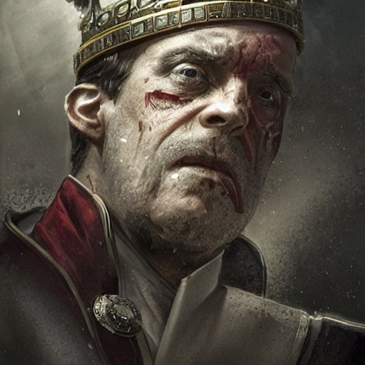

Você escolheu matar o Lord Grey

Você matou o Lord Grey. Bispo Benedict toma o poder e em forma de agradecimento te da um cargo de confiança na aliança.
Você matou o Lord Grey. Bispo Benedict toma o poder e em forma de agradecimento te da um cargo de confiança na aliança.